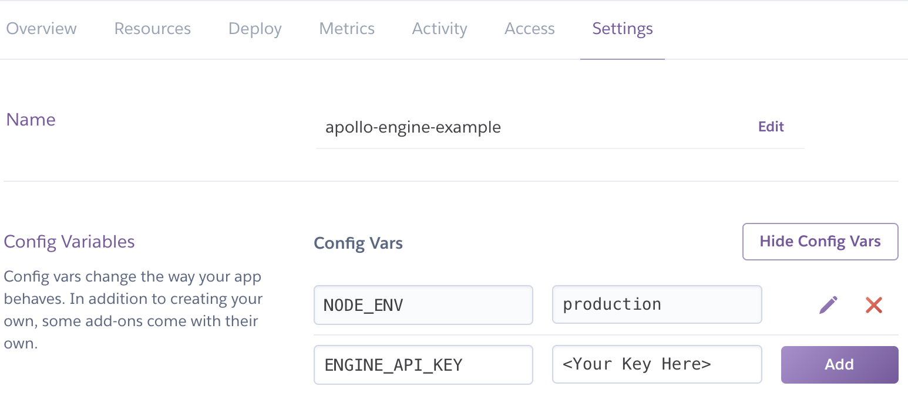

Deploying with Heroku
Heroku is a common Platform as a Service solution that allows users to deploy and have a functioning GraphQL endpoint running in a matter of minutes.
Prerequisites
The following must be done before following this guide:
- Setup a Heroku account
- Install the Heroku CLI if pushing to Heroku manually (see below)
Set up a new Heroku application
Before deploying, a new application must be setup. To do this, log into the Heroku dashboard. Then click New > Create New App in the top right. The name you choose will be referred to later as <HEROKU_APP_NAME>, so be sure to replace it in the later sections.

Name your app and hit “Create app”
Setting up the project
For Heroku, projects can be setup using any of the apollo-server HTTP variants (like express, hapi, etc).
The only special consideration that needs to be made is to allow heroku to choose the port that the server is deployed to. Otherwise, there may be errors, such as a request timeout.
To configure apollo-server to use a port defined by Heroku at runtime, the listen function in your setup file can be called with a port defined by the PORT environment variable:
server.listen({ port: process.env.PORT || 4000 }).then(({ url }) => {
console.log(`üöÄ Server ready at ${url}`);
});
Deploying the project
There are a couple of ways to push projects to Heroku. Automatically, with GitHub integration, or manually using Heroku push.
Deploying with Heroku push
Install the Heroku Cli, then inside of your project, run:
$ git init #existing git repositories can skip this
$ heroku git:remote -a <HEROKU_APP_NAME>
$ git add .
$ git commit -am "make it better"
$ git push heroku master # or your branch name
Send a query to your GraphQL service at your Heroku Application at <HEROKU_APP_NAME>.herokuapp.com
Automatically deploying with GitHub
If the project is already pushed to GitHub, it may be easier to setup automatic deployments from the project’s repository
On the Heroku dashboard, click on the name of the app that will be deployed from GitHub.
Then, on the app detail page, there is a tab bar at the top, with a “Deploy” option. On that page, the deployment method can be chosen and setup to integrate with GitHub.

Configuring environment variables
In order to enable the production mode of Apollo Server, you will need to set the NODE_ENV variable to production. To ensure you have visibility into your GraphQL performance in Apollo Server, you’ll want to add the ENGINE_API_KEY environment variable to Heroku. For the API key, log into the Engine UI and navigate to your service or create a new one.
Then under the “Settings” tab, click “Reveal Config Vars”. Next set NODE_ENV to production and copy your key from the Engine UI as the value for ENGINE_API_KEY.

Send a query to your GraphQL service at your Heroku Application at <HEROKU_APP_NAME>.herokuapp.com and then check out the tracing data in the Engine UI.